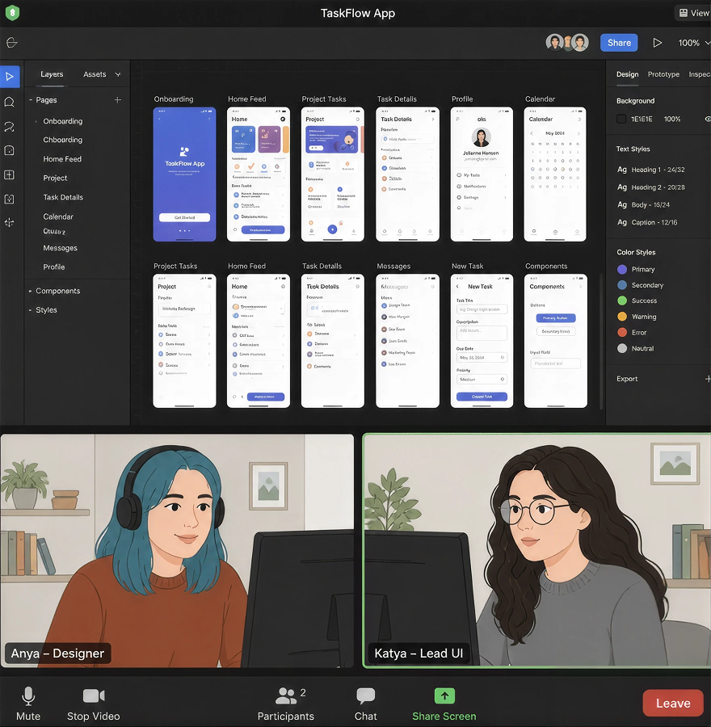
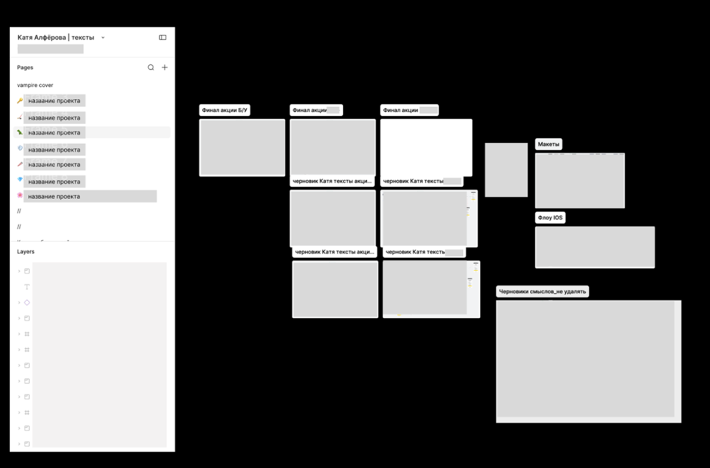
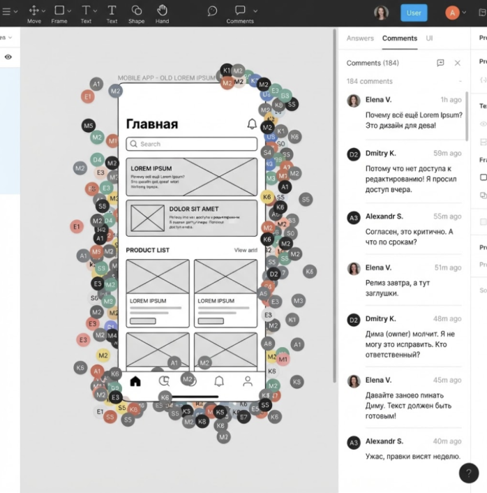

Есть разные варианты взаимодействия с дизайнером. Например, мне очень нравится, когда есть полное доверие и когда получается создать ту самую классную креативную пару.
Креативная пара
Это когда вы сидите и вместе что-то придумываете. В такие моменты я чувствую максимальное вдохновение. Это классно работает для сложных задач, когда есть много вариантов решений, вводных, взаимодействия со смежными командами. И тогда вы вместе с дизайнером и продактом сидите и буквально вместе крутите макеты.
Вы можете даже вместе думать над формулировками. Раньше я это не любила, а сейчас ценю такие моменты. Часто в часы совместной работы на ум приходят какие-то классные формулировки, потому что одна голова хорошо, а две лучше.

Пример иллюстрации — две коллеги брейнштормят вместе
И эта история — она работает как для офлайн-опыта, так и для онлайн тоже. Если мне раньше казалось, что надо только собираться в переговорке и работать вдвоём именно в офлайне, то сейчас я поняла, что онлайн-созвоны тоже вполне себе хороши. Особенно если вы в разных городах находитесь — это вас ничем не ограничивает. И обычно такие разгоны длятся час-два, потому что за 15 минут не всегда получается что-то порешать, а хорошая вдумчивая работа — вот именно совместная — по моему опыту, занимает довольно продолжительное время.
Как же такого добиться? Иногда я слышу, как редакторы стенают, что мол, дизайнеры не зовут их на подобные брейнштормы и разгоны. А потом от дизайнеров я слышу, что их редакторы неразговорчивые. Вывод — надо просто напрашиваться на встречи, всячески подсвечивать своё желание и готовность работать вместе. Бывают дизайнеры, которые предпочитают работать в одиночку или вместе с продактами, обычно это чувствуется. А есть товарищи, которые будут рады, если вы к ним заглянете с вопросом «Маш, хочешь вместе поразгоняем завтра вот эту задачку?».
Если вам вежливо откажут, ну что ж, значит, есть какие-то причины — и можно попробовать их нащупать. Возможно, дизайнеру как раз привычнее работать одному, а может, он не видит в вас поддержку. Ну например, вы до этого не были особо активными, а потом вдруг решили сменить тактику. Это может насторожить. Попробуйте искреннее объяснить, почему вам важно участвовать в дизайн-разгонах и чем вы можете быть полезны.
Ещё помогает напрашиваться на дизайнерские встречи. Я как-то краем уха услышала обсуждение одной из них и поняла, что туда приходят все мои дизайнеры и обсуждают задачки, советуются. Мне очень захотелось поучаствовать и я просто попросила их лида добавить меня. Теперь это одна из моих любимых встреч. Мы там не только обсуждаем работу, а ещё шутим и болтаем о всяком, идеальная возможность подружиться с коллегами!
Наверное, ещё важно отбросить своё эго и честно спросить себя — «А что я делаю, чтобы меня звали на брейнштормы?». Возможно, дизайнеры не зовут, потому что не чувствуют интерес — задачи выполняются механически, искорки нет. И на то могут быть свои причины. Вот хорошо бы поразмышлять о своём месте в команде, собрать неформальный фидбек, наметить план.
Асинхронная работа в общем файле
Это когда дизайнер погружает меня в задачу и идёт накидывать какой-то флоу, а потом призывает меня в макеты. Я в этих макетах пишу тексты, могу предложить свои улучшения по дизайну — как с UI-точки зрения, так и с точки зрения логики, базового построения флоу.
Допустим, я понимаю, что вот на этом моменте не хватает какого-то корнер-кейса, а этот экран или кнопка лишние. Очень важно все это доносить до дизайнера: в совместной работе рождается истина. И самое главное тут — учиться друг друга слушать и удерживать своё эго, потому что вам же тоже могут накидывать комменты на тексты. И вот важно понимать, что оценивают не вас, не вашу личность, а просто оценивают ваши тексты с той точки зрения, решают они конкретную задачу или не решают.
Работа в своём файле
Иногда я копирую флоу в свою фигму и работаю временно там. Так мне лучше думается или я знаю, что дизайн не финальный. Этот вариант также хорош для ситуаций, когда вы хотите сохранить свою работу — например, для ревью или портфолио. Можно ещё в общем файле создать вкладку «Тексты» или «Драфты», только потом важно не забыть перенести тексты в чистовики и проверить, что именно чистовые тексты отправились в разработку.

Скрин моей фигмы
Редфлаг: работа «без прав» (только просмотр и комментарии)
Бывает такая история: вас подключают к проекту, дают ссылку на фигму, вы открываете, а там только режим просмотра. Комментировать можно, а редактировать нельзя. И вы начинаете работать в комментариях — пишете варианты текстов прямо там, под макетами, надеясь, что дизайнер или продакт потом перенесут ваши правки в слои. И это кажется мелкой неудобностью, но на самом деле это огромный редфлаг, который говорит о том, что редактора не воспринимают как полноправного участника процесса.
Почему это плохо не только для вас, но и для продукта. Когда вы работаете в комментариях, текст существует отдельно от макета. Он не привязан к слоям, не виден в прототипе, не проверяется в контексте с другими элементами. Дизайнер, который должен перенести ваши правки, может что-то пропустить, перепутать или просто забыть, потому что у него своих задач много. В результате на прод уезжает не ваш текст, а то, что дизайнер запомнил на ходу. Или — ещё хуже — текст остаётся в комментариях, дизайнер не успевает его перенести, и в релиз идёт старый вариант. А когда вы через неделю открываете приложение и видите свою старую формулировку, вы уже ничего не можете сделать, потому что релиз вышел.
И это не говоря о том, как тяжело физически работать в комментариях. Вы пишете вариант, продакт пишет «давай попробуем по-другому», дизайнер оставляет свой комментарий, разработчик добавляет вопрос про длину текста — и через пару дней вы уже не можете найти ту самую версию, которую утверждали, потому что ветка комментариев превратилась в хаос. А когда правок много — у вас может быть десять комментариев на одном экране, и никто не помнит, какой из них финальный. Вы как бы есть в процессе, но не управляете им, и это очень быстро выматывает.
Но самое неприятное — это позиция, которую вы занимаете. Когда у вас нет прав на редактирование, вы не можете самостоятельно поправить тексты в макете, показать, как они ложатся в интерфейс, как влияют на сетку и компоновку элементов. Вы не можете экспериментировать с разными вариантами прямо в слоях, двигать их, подгонять под соседние блоки. Вы становитесь человеком, который присылает тексты, а не редактором, который проектирует интерфейс вместе с дизайнером. И это сильно бьёт по качеству — потому что текст в отрыве от визуала всегда теряет часть смысла, которую вы могли бы уловить, если бы видели его в контексте.
Что делать, если вы оказались в такой ситуации.
- Первое — не соглашаться молча. В начале проекта, когда вам дают доступ, вы сразу проверяете права и если видите только просмотр, пишете продакту или руководителю: «Мне нужны права на редактирование, чтобы я могла работать в макете напрямую. Работа через комментарии замедляет процесс и повышает риск ошибок на проде». Это профессиональное требование имеет под собой бизнес-обоснование: вы снижаете риски и экономите время всей команды.
- Второе — если права дать не могут по каким-то организационным причинам (например, политика безопасности или ограничения доступа для внешних редакторов), вы договариваетесь о чётком процессе. Вам присылают отдельный файл, где вы работаете как полноценный редактор, а дизайнер потом переносит ваши тексты в основной макет. Или вы работаете в копии фигмы, а потом дизайнер мерджит изменения. Или вы используете плагины для синхронизации текстовых слоёв. Вариантов много, и любой из них лучше, чем бесконечные комментарии.
- И третье — если доступ к редактированию вам так и не дали, а работать приходится в комментариях, вы выстраиваете систему. Каждый ваш комментарий начинается с пометки «[финальный вариант]», чтобы никто не путался. Вы ведёте отдельный документ, где фиксируете все утверждённые тексты в одном месте, чтобы в случае конфликта между комментариями у вас был канонический источник правды. Вы в конце каждого этапа делаете скриншоты макета с вашими правками и отправляете команде на подтверждение, чтобы у всех была понятная картинка, что именно уезжает в разработку. Это костыли, но они помогают не потерять качество, пока вы боретесь за права.
В идеальном мире редактор имеет полный доступ к фигме и правит тексты напрямую в макете. Когда текст и визуал живут в одном файле, вы видите, как они сочетаются с соседними элементами, как влияют на длину кнопок и на компоновку блоков. Вы можете подвинуть абзац или разбить длинную фразу на две строки прямо в слое, не дожидаясь дизайнера. Вы можете проверить, что текст не перекрывает иконку и что он корректно ложится на разных размерах экранов. И вы можете быть уверены, что в прод уедет именно тот вариант, который вы утвердили.
Поэтому отсутствие прав на редактирование — сигнал, что редактор исключён из ядра процесса. И если вы хотите делать качественные продукты и расти профессионально, вы должны это сигнал распознавать и реагировать. В хороших командах вам дадут доступ на редактирование сразу, потому что там знают: редактор — такой же автор макета, как и дизайнер, и без его полноправного участия интерфейс просто не будет работать.

Пример иллюстрации